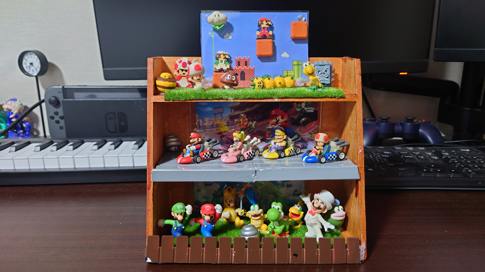
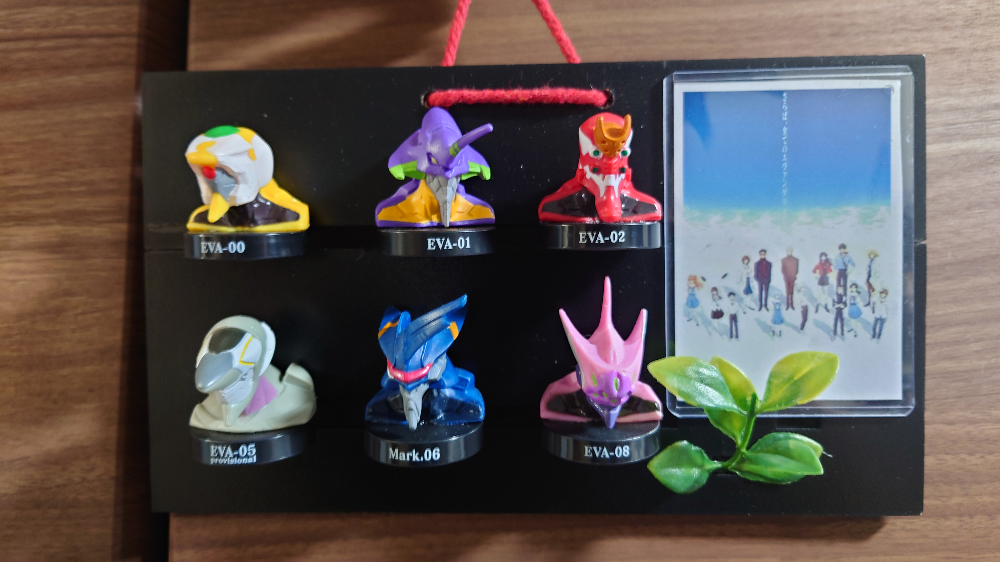

こんにちは、ザクザク食感です。
ここ最近、父から仕送りが届くようになった。本当にうれしい。
以前も日記に書いた気がするが、期限が切れた保険証を返却するために父に簡易書留で保険証を送ったら、「成長したな」と褒められたことがあった。
父は無口で教育に無関心でずっと会社にいるタイプの人間だったので、面と向かって褒められたことがそのとき初めてで、号泣してしまった。
その件以来、本当に僕のことを見直してくれたのか、年末にお酒を送ってくれたり、今日もお米とお酒を送ってくれた。本当にうれしい！！！！！
ただ、仕送りと一緒に毎回父がつくったオブジェ（？）が送られてきて少し困っている。
言葉で説明するのは難しいのだが、僕が昔集めたり買ってもらっていたフィギュアたちが壁掛けの展示物としてひとまとめの作品になっている。
見てもらった方が早いね
 チョコエッグのマリオとマリカーWiiのフィギュア
 エヴァQのときにセブンでもらえたペットボトルキャップ 当時10歳とかなので12年前の遺物……
こういうのが大量に送られてくる。
うわ懐かし！！！！！ってなるから楽しいんだけど、家に飾る場所もないから正直困る……
父はDIYが好きで、家庭が崩壊する前はよく休日にベランダを改造したり、まだ物心ついたぐらいの僕にダンボールで家をつくったりしてくれた。僕はそれが大好きだった。
それを見て育ったので、小学校の図工の授業は得意な方だった。持ち帰った作品は父がいつの間にか↑みたいな工作をして飾ったりしてくれた。
ただ、逆に作品にならない思い出は僕が大きくなってからほとんど捨てられてしまった。
僕の幼稚園から中学までの通学カバンとか、制服とか、画用紙に描いた大きな絵とか、単純に場所を取るものは全部捨てられてしまった。
なんで全部捨てるの！？ってキレたことがあるけど、「必要ない」って言われて僕の成長とかどうでもよくなったんだ……と思ったのを覚えている。今考えると単にミニマリスト的な思考で家族のものを捨てまくっていたんだと思う。
それから時間がたって、また工作をして僕に送ってきてくれている。
これは単純に工作が好きっていう気持ちと部屋を片づけたいっていう気持ちを同時に発散しているんじゃないか……？
実家に戻ったときにこういう作品がたくさんできて飾られているのが個人的には一番うれしいのだが、そうはならないらしい。
それか単純に誰かに見てほしいのか……？だとしたら気持ちはわかる。
どうであれ、息子のことをなんとも思っていなかったら連絡も来ないはずだから、僕が父にとってまだ温かいままなんだと実感できてすごく嬉しい。
もっと早くたくさん話してればあんなに不安な気持ちにならないで済んだのにな……コミュニケーションって本当に難しいし、家族って他人なんだなと再認識しました。
それでは、さようなら。